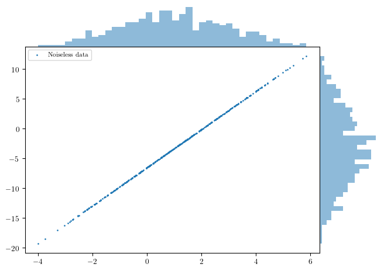
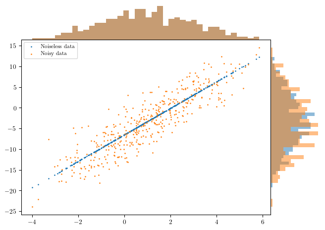
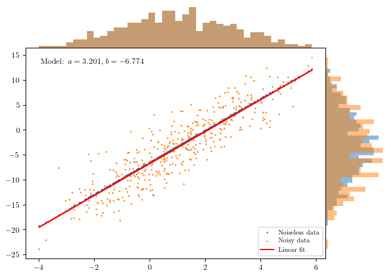
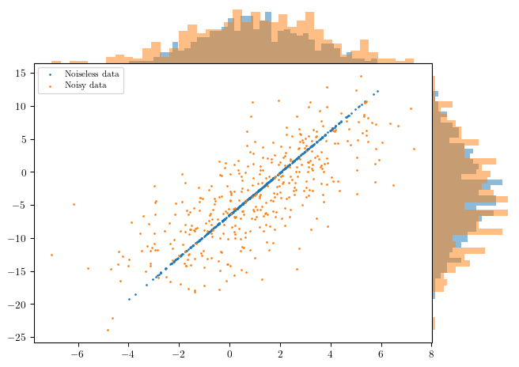
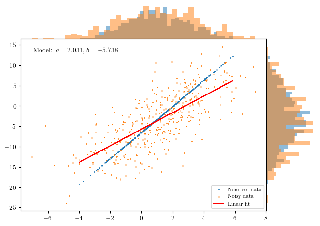
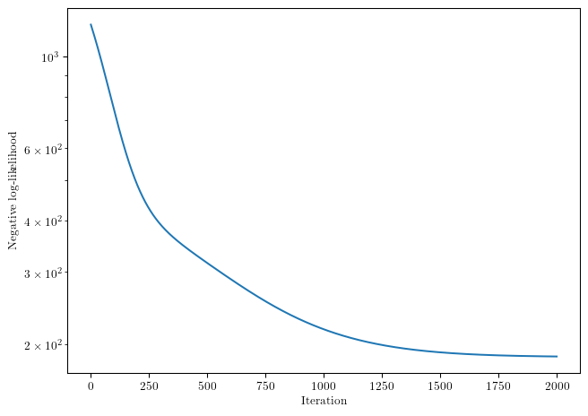
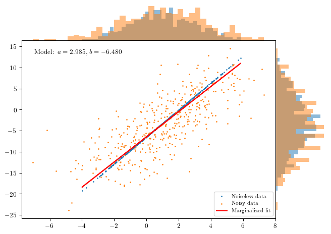

Jax is using device: NVIDIA GeForce RTX 2060 with Max-Q DesignLinear regression
A notebook to illustrate the linear regression method and some of the associated difficulties.
Code source available here.
Linear regression
The goal of this notebook is to illustrate the linear regression method and, in particular, highlight some difficulties that can arise when modelling the stochastic process generating the data.
In this task, we want to constrain the relationship between two variables \(x\) and \(y\) to be linear, such that, we can write the model as: \[ y = a x + b + \epsilon \]
where \(a\) and \(b\) are the parameters of the model, and \(\epsilon\) is a random variable representing the noise in the data. The goal of linear regression is to estimate the parameters \(a\) and \(b\) that best fit the observed data.
Generating the synthetic data


Optimal parameters:
a = 3.201, b = -6.774
Input parameters:
a = 3.200, b = -6.500

Optimal parameters:
a = 2.033, b = -5.738
Input parameters:
a = 3.200, b = -6.500
the unaccounted error on the \(x\) variable significantly biases our linear regression estimation. This highlights that when performing linear regression, it is important to account for all sources of noise in the data, including noise in the independent variable \(x\). A way to account for this is to use Jax to make a gradient descent optimization adding the true \(x\) values as a parameter to optimize, and then marginalizing over them. Let’s implement it
0%| | 0/2000 [00:00<?, ?it/s] 0%| | 1/2000 [00:00<22:43, 1.47it/s] 0%| | 2/2000 [00:00<14:14, 2.34it/s] 1%|▏ | 26/2000 [00:01<00:47, 41.15it/s] 2%|▎ | 50/2000 [00:01<00:24, 78.57it/s] 4%|▍ | 75/2000 [00:01<00:16, 114.26it/s] 5%|▌ | 100/2000 [00:01<00:13, 144.35it/s] 6%|▌ | 124/2000 [00:01<00:11, 167.17it/s] 7%|▋ | 149/2000 [00:01<00:09, 186.78it/s] 9%|▊ | 173/2000 [00:01<00:09, 199.28it/s] 10%|▉ | 196/2000 [00:01<00:08, 203.80it/s] 11%|█ | 219/2000 [00:01<00:08, 206.33it/s] 12%|█▏ | 244/2000 [00:01<00:08, 216.43it/s] 13%|█▎ | 269/2000 [00:02<00:07, 223.65it/s] 15%|█▍ | 293/2000 [00:02<00:07, 228.33it/s] 16%|█▌ | 318/2000 [00:02<00:07, 232.12it/s] 17%|█▋ | 343/2000 [00:02<00:07, 234.65it/s] 18%|█▊ | 367/2000 [00:02<00:06, 235.79it/s] 20%|█▉ | 392/2000 [00:02<00:06, 237.18it/s] 21%|██ | 416/2000 [00:02<00:06, 237.54it/s] 22%|██▏ | 440/2000 [00:02<00:06, 237.80it/s] 23%|██▎ | 464/2000 [00:02<00:06, 237.79it/s] 24%|██▍ | 488/2000 [00:02<00:06, 237.61it/s] 26%|██▌ | 512/2000 [00:03<00:06, 234.57it/s] 27%|██▋ | 536/2000 [00:03<00:06, 232.42it/s] 28%|██▊ | 560/2000 [00:03<00:06, 230.73it/s] 29%|██▉ | 584/2000 [00:03<00:06, 232.93it/s] 30%|███ | 609/2000 [00:03<00:05, 235.65it/s] 32%|███▏ | 633/2000 [00:03<00:05, 228.25it/s] 33%|███▎ | 656/2000 [00:03<00:06, 223.68it/s] 34%|███▍ | 679/2000 [00:03<00:05, 220.59it/s] 35%|███▌ | 702/2000 [00:03<00:05, 218.50it/s] 36%|███▌ | 724/2000 [00:04<00:05, 216.43it/s] 37%|███▋ | 746/2000 [00:04<00:05, 215.45it/s] 38%|███▊ | 769/2000 [00:04<00:05, 218.58it/s] 40%|███▉ | 793/2000 [00:04<00:05, 224.44it/s] 41%|████ | 816/2000 [00:04<00:06, 177.52it/s] 42%|████▏ | 838/2000 [00:04<00:06, 186.23it/s] 43%|████▎ | 862/2000 [00:04<00:05, 199.89it/s] 44%|████▍ | 886/2000 [00:04<00:05, 210.01it/s] 46%|████▌ | 910/2000 [00:04<00:04, 218.04it/s] 47%|████▋ | 934/2000 [00:05<00:04, 224.16it/s] 48%|████▊ | 958/2000 [00:05<00:04, 226.96it/s] 49%|████▉ | 982/2000 [00:05<00:04, 229.82it/s] 50%|█████ | 1006/2000 [00:05<00:04, 232.28it/s] 52%|█████▏ | 1031/2000 [00:05<00:04, 235.05it/s] 53%|█████▎ | 1055/2000 [00:05<00:04, 235.68it/s] 54%|█████▍ | 1079/2000 [00:05<00:03, 235.71it/s] 55%|█████▌ | 1103/2000 [00:05<00:03, 233.44it/s] 56%|█████▋ | 1127/2000 [00:05<00:03, 232.55it/s] 58%|█████▊ | 1151/2000 [00:05<00:03, 230.91it/s] 59%|█████▉ | 1175/2000 [00:06<00:03, 231.63it/s] 60%|█████▉ | 1199/2000 [00:06<00:03, 229.59it/s] 61%|██████ | 1222/2000 [00:06<00:03, 228.37it/s] 62%|██████▏ | 1246/2000 [00:06<00:03, 229.68it/s] 64%|██████▎ | 1271/2000 [00:06<00:03, 233.01it/s] 65%|██████▍ | 1295/2000 [00:06<00:03, 234.74it/s] 66%|██████▌ | 1319/2000 [00:06<00:02, 233.89it/s] 67%|██████▋ | 1344/2000 [00:06<00:02, 235.95it/s] 68%|██████▊ | 1369/2000 [00:06<00:02, 237.31it/s] 70%|██████▉ | 1393/2000 [00:07<00:02, 233.56it/s] 71%|███████ | 1417/2000 [00:07<00:02, 232.61it/s] 72%|███████▏ | 1441/2000 [00:07<00:02, 233.92it/s] 73%|███████▎ | 1465/2000 [00:07<00:02, 234.28it/s] 74%|███████▍ | 1489/2000 [00:07<00:02, 234.02it/s] 76%|███████▌ | 1514/2000 [00:07<00:02, 237.07it/s] 77%|███████▋ | 1538/2000 [00:07<00:01, 233.70it/s] 78%|███████▊ | 1563/2000 [00:07<00:01, 237.17it/s] 79%|███████▉ | 1588/2000 [00:07<00:01, 239.92it/s] 81%|████████ | 1613/2000 [00:07<00:01, 242.20it/s] 82%|████████▏ | 1638/2000 [00:08<00:01, 242.84it/s] 83%|████████▎ | 1663/2000 [00:08<00:01, 243.31it/s] 84%|████████▍ | 1688/2000 [00:08<00:01, 237.79it/s] 86%|████████▌ | 1712/2000 [00:08<00:01, 236.48it/s] 87%|████████▋ | 1736/2000 [00:08<00:01, 232.58it/s] 88%|████████▊ | 1760/2000 [00:08<00:01, 233.06it/s] 89%|████████▉ | 1784/2000 [00:08<00:00, 234.35it/s] 90%|█████████ | 1808/2000 [00:08<00:00, 235.29it/s] 92%|█████████▏| 1832/2000 [00:08<00:00, 235.58it/s] 93%|█████████▎| 1857/2000 [00:08<00:00, 238.55it/s] 94%|█████████▍| 1881/2000 [00:09<00:00, 238.64it/s] 95%|█████████▌| 1905/2000 [00:09<00:00, 237.95it/s] 96%|█████████▋| 1929/2000 [00:09<00:00, 237.29it/s] 98%|█████████▊| 1953/2000 [00:09<00:00, 236.51it/s] 99%|█████████▉| 1977/2000 [00:09<00:00, 237.33it/s]100%|██████████| 2000/2000 [00:09<00:00, 208.78it/s]Optimal parameters:
a = 2.985, b = -6.480
Input parameters:
a = 3.200, b = -6.500

Mean of residuals: -0.00035297035